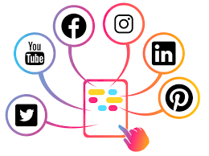

Bienvenido a TechMach
Nosotros
En 2018, en un rincón del pueblo de chillar, un joven soñador llamado Juan Ignacio comenzó su viaje en el mundo de la tecnología. Sin recursos financieros pero con una pasión inquebrantable por la innovación, Juan alias "juani" dio vida a TechMach, una empresa que surgiría desde la humildad para impactar el mundo de la tecnología. La misión de TechMach es democratizar la tecnología, brindando soluciones accesibles y de alta calidad que empoderen a las personas y las comunidades para prosperar en la era digital. Estamos comprometidos en construir puentes hacia el futuro, asegurando que la tecnología sea inclusiva y beneficiosa para todos. Nuestra visión es ser líderes en la MercadoTecnia accesible y transformadora que aborde los desafíos globales y mejore la calidad de las Pymes y Empresas. Buscamos un futuro donde la mercadotecnia sea una herramienta que conecte, eduque y interactue con el consumidor, sin importar el origen o el estatus económico. Desde sus modestos inicios en el garaje de Juani hasta el presente, TechMach ha mantenido su compromiso con la innovación y la accesibilidad. Nuestra empresa ha crecido, pero nunca hemos perdido de vista nuestros valores fundamentales de humildad, dedicación y empatía. En TechMach, celebramos el espíritu de superación y la pasión por la tecnología que llevó a Juani a crear esta empresa. Continuamos brindando soluciones tecnológicas asequibles y efectivas para hacer frente a los retos más apremiantes del mundo. Te invitamos a unirte a nosotros en este inspirador viaje desde la humildad hacia un futuro tecnológico inclusivo y esperanzador. Juntos, podemos hacer que la tecnología sea una fuerza de cambio positivo en el mundo.
Te presentamos nuestro equipo
Desarrollador Web Full Stack - Juan Pérez
Juan es un desarrollador web apasionado con experiencia en la creación de aplicaciones web de alto rendimiento. Su habilidad para trabajar tanto en el front-end como en el back-end lo convierte en un activo invaluable para proyectos web complejos. En su tiempo libre, le encanta resolver acertijos de código y explorar nuevas tecnologías.
Diseñadora Gráfica - Ana Gómez
Ana es una diseñadora gráfica creativa y altamente talentosa que transforma ideas en imágenes impactantes. Con un ojo para el diseño y una pasión por la estética, ha estado creando diseños memorables durante más de una década. Fuera de su estudio de diseño, disfruta de la fotografía y la pintura.
Desarrolladora Frontend - María López
María es una desarrolladora frontend con experiencia en la creación de interfaces de usuario intuitivas y atractivas. Con un enfoque en la experiencia del usuario, se dedica a garantizar que cada sitio web sea accesible y atractivo. En su tiempo libre, le gusta la música indie y la jardinería.
Especialista en SEO - Sofia Rodríguez
Sofia es una especialista en SEO con un historial comprobado de aumentar el tráfico orgánico y mejorar la visibilidad en línea. Con más de 8 años en la industria, domina las últimas tendencias de búsqueda y estrategias de optimización. Cuando no está inmersa en datos y análisis, Sofia disfruta de la escalada en roca y la lectura de novelas de misterio.
Desarrollador Backend - Javier Martínez
Javier es un desarrollador backend con experiencia en la creación de sistemas robustos y escalables. Es un apasionado de la resolución de problemas y la eficiencia en el desarrollo. En su tiempo libre, le gusta jugar al ajedrez y participar en proyectos de código abierto.
Instalaciones
Servicios
Desarrollo Web y diseño

Servicios de desarrollo web completos y complejos, utilizando herramientas fullstack ( back-end y front-end) para la optimizacion y distribucion de informacion sobre tu emprendimiento
Tecnicas de SEO
Te ofrecemos nuestros servicios de SEO para la optimizacion y eficiencia de busqueda par tu pagina web, utilizando estrategias con el motor de busqueda la posicionamos en lo mas alto
Comunnity Manager
promovemos Servicios de community manager para que te tengas que desligar del constante uso de redes sociales y encargarnos nosotros de su administracion y produccion de contenido